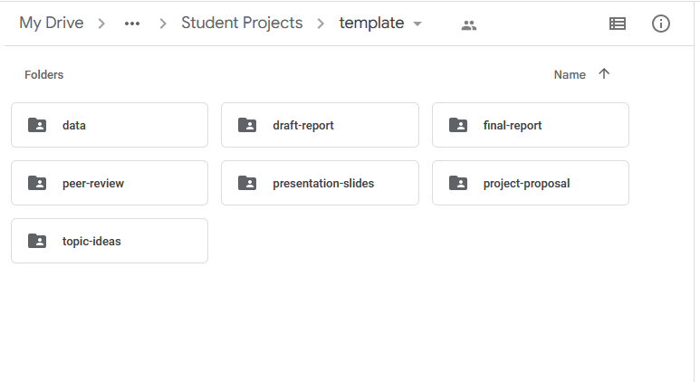

Project Description (Core Capstone)
Timeline
Topic ideas due Wed, Feb 22
Proposal due Wed, Mar 22
Draft report due Wed, Apr 12
Peer review due Wed, Apr 19
Final report due Friday, Apr 28
Final Presentation due Final Exam Day
Introduction
TL;DR: Pick a data set and do a regression or classification analysis.
The goal of the final project is for you to use data science methods to analyze data of your choosing. The data should broadly connect to topics you studied in the Core Curriculum (first-year seminar, foundations for the future and understanding the world domains, and the themed explorations). The goal of this project is for you to demonstrate proficiency in the techniques we have covered in this class and apply them to a data set to analyze it in a meaningful way.
This project will be your Core Capstone work. A Core Capstone Work is an assignment (or set of assignments) in students’ major capstone/seminar course where students integrate their Core Curriculum coursework with their major course work. Students will use their collected Signature Assignments (one assignment from each Core course, collected in Brightspace ePortfolios) to help in this work. This Core Capstone work will have six (6) deliverables that fulfill the learning outcomes of the Core Capstone.
Deliverables
The six deliverables for the final project are
- Topic Ideas - Identify 2-3 data sets that connect with the topics you covered in the Core Curriculum. Write a brief report of the data (Core Capstone Work LO1 and L02).
- Proposal - Begin your analysis of your chosen dataset and its connection with two (2) of your signature assignments (Core Capstone Work LO1 and L02)
- Draft Report - First draft of your final report (Core Capstone Work LO1 and LO2)
- Peer Review - Formal peer review on another students project. This will provide important feedback to others and provide you an opportunity to serve and aid others (Core Capstone Work LO3).
- Final Report - A written, reproducible report detailing your analysis (Core Capstone Work LO1). Include an ending discussion of how your coursework has helped you to be a leader in service to others (Core Capstone Work LO3)
- Final Presentation - A brief 7-10 minutes presentation that summarizes your work (Core Capstone Work LO1).
All analyses must be done in Jupyter Notebooks stored in a shared Google Drive Folder. All components of the project must be reproducible (with the exception of the presentation).
Topic ideas
Identify 2-3 data sets you’re interested in potentially using for the final project that connect with the topics you covered in the Core Curriculum. If you’re unsure where to find data, you can use the list of potential data sources in the Tips + Resources section as a starting point. Example project ideas and datasets can be found in the Example Project Ideas section. It may also help to think of topics you’re interested in investigating and find data sets on those topics.
The purpose of submitting project ideas is to give you time to find data for the project and to make sure you have a data set that can help you be successful in the project. Therefore, you must use one of the data sets submitted as a topic idea, unless otherwise notified by me.
The data sets should meet the following criteria:
At least 100 observations
At least 8 columns
At least 6 of the columns must be useful and unique predictor variables.
- Identifier variables such as “name”, “social security number”, etc. are not useful predictor variables.
- If you have multiple columns with the same information (e.g. “state abbreviation” and “state name”), then they are not unique predictors.
At least one variable that can be identified as a reasonable response variable
- The response variable can be quantitative or categorical.
A mix of quantitative and categorical variables that can be used as predictors.
Observations should reasonably meet the independence condition. Therefore, avoid data with repeated measures, data collected over time, etc.
Please ask me if you’re unsure whether your data set meets the criteria.
Please write a report in the file topic-ideas.ipynb which is in you shared Google Drive folder. Include the following:
Introduction and data
- State the source of the data set.
- Describe when and how it was originally collected (by the original data curator, not necessarily how you found the data).
- Describe the observations and the general characteristics being measured in the data.
- Describe how the data set connect to your Core Studies.
Research question
- Describe a research question you’re interested in answering using this data.
Glimpse of data
- Use the
infofunction to provide an overview of each data set
Print your Jupyter notebook as PDF and submit to Brightspace
Save Dataset
Please save each dataset in the data folder in your Google Drive Folder.
Project proposal
Please write a report in the file project-pro.ipynb which is in you shared Google Drive folder.
The purpose of the project proposal is to help you think about your analysis strategy early.
Include the following in the proposal:
Section 1 - Introduction
The introduction section includes
- an introduction to the subject matter you’re investigating
- the motivation for your research question (citing any relevant literature)
- briefyly describe its connection to Core classes
- the general research question you wish to explore
- your hypotheses regarding the research question of interest.
Section 2 - Data description
In this section, you will describe the data set you wish to explore. This includes
- description of the observations in the data set,
- description of how the data was originally collected (not how you found the data but how the original curator of the data collected it).
Section 3 - Analysis approach
In this section, you will provide a brief overview of your analysis approach. This includes:
- Description of the response variable.
- Visualization and summary statistics for the response variable.
- List of variables that will be considered as predictors
- Model selection (linear regresssion, logistic regression, k-nearest neighbors, support vector machine, etc.)
Section 4 - Connect to Core Capstone Work
Describe how this dataset and analysis will connect with at least two (2) your signature assignments from the Core (Core Capstone Work LO2)
- Describe each signature assignment
- Describe how the dataset and analysis builds upon or connects with your prior work
Example: You took Philosphy 106 (ethics) and you discussed the relationship between employers and employees. You submitted a signature assignment of a paper on unions (pro or against, it doesn’t matter). A possible dataset you could choose is the Right to Work Dataset and do an analysis on the relationship between state laws and their effect on union participation.
Section 5 - Data dictionary (aka code book)
In this section, you will create a markdown table that describes each varible in the dataset. Put your da in the data folder. Link to this file from your proposal writeup.
Submission
Print your Jupyter notebook as a PDF and submit to Brightspace.
Proposal grading
| Total | 10 pts |
|---|---|
| Introduction | 3 pts |
| Data description | 2 pts |
| Analysis plan | 4 pts |
| Data dictionary | 1 pts |
Each component will be graded as follows:
Meets expectations (full credit): All required elements are completed and are accurate. The narrative is written clearly, all tables and visualizations are nicely formatted, and the work would be presentable in a professional setting.
Close to expectations (half credit): There are some elements missing and/or inaccurate. There are some issues with formatting.
Does not meet expectations (no credit): Major elements missing. Work is not neatly formatted and would not be presentable in a professional setting.
Draft report
The purpose of the draft and peer review is to give you an opportunity to get early feedback on your analysis. Therefore, the draft and peer review will focus primarily on the exploratory data analysis, modeling, and initial interpretations.
Write the draft in the written-report.ipynb file in your shared Google Drive folder. You do not need to submit the draft on Gradescope.
Below is a brief description of the sections to focus on in the draft:
Introduction and data
This section includes an introduction to the project motivation, data, and research question. Include this papers connection to at least two core classes. Describe the data and definitions of key variables. It should also include some exploratory data analysis (EDA). All of the EDA won’t fit in the paper, so focus on the EDA for the response variable and a few other interesting variables and relationships.
Methodology
This section includes a brief description of your modeling process. Explain the reasoning for the type of model you’re fitting, predictor variables considered for the model including any interactions. Additionally, show how you arrived at the final model by describing the model selection process, any variable transformations (if needed), and any other relevant considerations that were part of the model fitting process.
Results and Discussion
In this section, you will output the final model and include a brief discussion of the model assumptions, diagnostics, and any relevant model fit statistics. If you are doing a classificaiton problem please include a confusion matrix.
This section also includes initial interpretations and conclusions drawn from the model.
Submission
Print your Jupyter notebook as a PDF and submit to Brightspace.
Peer review
Critically reviewing others’ work is a crucial part of the scientific process. Each invidual/team will be assigned two other teams’s projects to review. Each team should have finished their draft report by the due date. A class period in the following week will be dedicated to the peer review, and all reviews will be due by the end of that class session.
The peer review will be graded on the extent to which it comprehensively and constructively addresses the components of the partner team’s report: the research context and motivation, exploratory data analysis, modeling, interpretations, and conclusions.
I will assign which two teams your team will reivew shortely before the peer reivew process begins
Process and questions
Write your reviews inside your shared Google Drive folder called peer-review. Inside will be two Google documents for you to fill out for each team you review. Please ensure each review has the following:
- Names of team members that participated in this review: \[FULL NAMES OF TEAM MEMBERS DOING THE REVIEW\]
- Describe the goal of the project.
- Describe the data used or collected, if any.
If the proposal does not include the use of a specific dataset, comment on whether the project would be strengthened by the inclusion of a dataset.
- Describe the approaches, tools, and methods that will be used.
- Is there anything that is unclear from the proposal?
- Provide constructive feedback on how the team might be able to improve their project.
Make sure your feedback includes at least one comment on the statistical modeling aspect of the project, but do feel free to comment on aspects beyond the modeling.
- What aspect of this project are you most interested in and would like to see highlighted in the presentation.
- Provide constructive feedback on any issues with file and/or code organization.
- (Optional) Any further comments or feedback?Submission
Print your Google Docs as a PDF and submit to Brightspace. You should have two uploads for each team you review.
Final report
Your written report must be completed in the written-report.ipynb file and must be reproducible. All team members should contribute to the report
You will submit the PDF of your final report on Brightspace.
The mandatory components of the report are below. You are free to add additional sections as necessary. The report, including visualizations, should be no more than 10 pages long. is no minimum page requirement; however, you should comprehensively address all of the analysis and report.
Be selective in what you include in your final write-up. The goal is to write a cohesive narrative that demonstrates a thorough and comprehensive analysis rather than explain every step of the analysis.
You are welcome to include an appendix with additional work at the end of the written report document; however, grading will largely be based on the content in the main body of the report. You should assume the reader will not see the material in the appendix unless prompted to view it in the main body of the report. The appendix should be neatly formatted and easy for the reader to navigate. It is not included in the 10-page limit.
The written report is worth 40 points, broken down as follows
| Total | 40 pts |
|---|---|
| Introduction/data | 6 pts |
| Methodology | 10 pts |
| Results | 14 pts |
| Discussion + conclusion | 6 pts |
| Organization + formatting | 4 pts |
Click here for a PDF of the written report rubric.
Introduction and data
This section includes an introduction to the project motivation, data, and research question. Include this papers connection to at least two core classes. Describe the data and definitions of key variables. It should also include some exploratory data analysis. All of the EDA won’t fit in the paper, so focus on the EDA for the response variable and a few other interesting variables and relationships.
Grading criteria
The research question and motivation are clearly stated in the introduction, including citations for the data source and any external research. The data are clearly described, including a description about how the data were originally collected and a concise definition of the variables relevant to understanding the report. The data cleaning process is clearly described, including any decisions made in the process (e.g., creating new variables, removing observations, etc.) The explanatory data analysis helps the reader better understand the observations in the data along with interesting and relevant relationships between the variables. It incorporates appropriate visualizations and summary statistics.
Methodology
This section includes a brief description of your modeling process. Explain the reasoning for the type of model you’re fitting, predictor variables considered for the model including any interactions. Additionally, show how you arrived at the final model by describing the model selection process, interactions considered, variable transformations (if needed), assessment of conditions and diagnostics, and any other relevant considerations that were part of the model fitting process.
Grading criteria
The analysis steps are appropriate for the data and research question. The group used a thorough and careful approach to select the final model; the approach is clearly described in the report. The model selection process addressed any violations in model conditions. The model conditions and diagnostics are thoroughly and accurately assessed for their model. If violations of model conditions are still present, there was a reasonable attempt to address the violations based on the course content.
Results
This is where you will output the final model with any relevant model fit statistics.
Describe the key results from the model. The goal is not to interpret every single variable in the model but rather to show that you are proficient in using the model output to address the research questions, using the interpretations to support your conclusions. Focus on the variables that help you answer the research question and that provide relevant context for the reader.
Grading criteria
The model fit is clearly assessed, and interesting findings from the model are clearly described. Interpretations of model coefficients or behavrior are used to support the key findings and conclusions. If the primary modeling objective is prediction, the model’s predictive power is thoroughly assessed including the use of RMSE or confusion matrices.
Discussion + Conclusion
In this section you’ll include a summary of what you have learned about your research question along with statistical arguments supporting your conclusions. In addition, discuss the limitations of your analysis and provide suggestions on ways the analysis could be improved. Any potential issues pertaining to the reliability and validity of your data and appropriateness of the statistical analysis should also be discussed here. Please also inlcude an ending discussion of how your coursework has helped (or prepared) you to be a leader in service to others
Grading criteria
Overall conclusions from analysis are clearly described, and the model results are put into the larger context of the subject matter and original research question. There is thoughtful consideration of potential limitations of the data and/or analysis, and ideas for future work are clearly described.
Organization + formatting
This is an assessment of the overall presentation and formatting of the written report.
Grading criteria
The report neatly written and organized with clear section headers and appropriately sized figures with informative labels. Numerical results are displayed with a reasonable number of digits, and all visualizations are neatly formatted. All citations and links are properly formatted. If there is an appendix, it is reasonably organized and easy for the reader to find relevant information. All code, warnings, and messages are suppressed. The main body of the written report (not including the appendix) is no longer than 10 pages.
Submission
Export your Jupyter notebook as a PDF and submit to Brightspace.
Presentation + slides
Slides
In addition to the written report, your team will also create presentation slides that summarize and showcase your project. Introduce your research question and data set, showcase visualizations, and discuss the primary conclusions. These slides should serve as a brief visual addition to your written report and will be graded for content and quality.
Your slides should be Google Slides and be created in your shared Google Drive folder presentation-slides
The slide deck should have no more than 8 content slides + 1 title slide. Here is a suggested outline as you think through the slides; you do not have to use this exact format for the 8 slides.
- Title Slide
- Slide 1: Introduce the topic and motivation
- Slide 2: Introduce the data
- Slide 3: Highlights from EDA
- Slide 4: Highlights from EDA
- Slide 5: Final model
- Slide 6: Final model
- Slide 7: Interesting findings from the model
- Slide 8: Conclusions + future work
Submission
Export your slides as a PDF and submit to brightsapce
Reproducibility + organization
All written work (with exception of presentation slides) should be reproducible, and the shared Google Drive should be neatly organized.
Here is an example of how it should be organized:

Points for reproducibility + organization will be based on the reproducibility of the written report and the organization of the Google Drive folder.
Overall grading
The grade breakdown is as follows:
| Total | 100 pts |
|---|---|
| Topic ideas | 5 pts |
| Project proposal | 15 pts |
| Peer review | 10 pts |
| Written report | 45 pts |
| Slides + video presentation | 20 pts |
| Reproducibility + organization | 5 pts |
Note: No late project reports or videos are accepted.
Grading summary
Grading of the project will take into account the following:
- Content - What is the quality of research and/or policy question and relevancy of data to those questions?
- Correctness - Are statistical procedures carried out and explained correctly?
- Writing and Presentation - What is the quality of the statistical presentation, writing, and explanations?
- Creativity and Critical Thought - Is the project carefully thought out? Are the limitations carefully considered? Does it appear that time and effort went into the planning and implementation of the project?
A general breakdown of scoring is as follows:
- 90%-100%: Outstanding effort. Student understands how to apply all statistical concepts, can put the results into a cogent argument, can identify weaknesses in the argument, and can clearly communicate the results to others.
- 80%-89%: Good effort. Student understands most of the concepts, puts together an adequate argument, identifies some weaknesses of their argument, and communicates most results clearly to others.
- 70%-79%: Passing effort. Student has misunderstanding of concepts in several areas, has some trouble putting results together in a cogent argument, and communication of results is sometimes unclear.
- 60%-69%: Struggling effort. Student is making some effort, but has misunderstanding of many concepts and is unable to put together a cogent argument. Communication of results is unclear.
- Below 60%: Student is not making a sufficient effort.
Late work policy
There is no late work accepted on this project. Be sure to turn in your work early to avoid any technological mishaps.
Example Project Ideas
- You took Philosphy 106 (ethics) and you discussed the relationship between employers and employees. You submitted a signature assignment of a paper on unions (pro or against, it doesn’t matter). A possible dataset you could choose is the Right to Work Dataset and do an analysis on the relationship between state laws and their effect on union participation.
- You took a BIO 101 class and discussed the biologcal mechanisms of diabetes. A possible dataset you could choose is the Diabetes Dataset and create a model that predict diabetes based on diagnostic measurements.
- You took ARTS 104 (Creativity: Methods and Practices). A possible dataset you could choose is the Best Artworks of All Time and do a clustering analysis to see if there exists any patterns about great artists in our times (country, age, sex, etc.).
- You took SOCIO 101. A possible dataset you could choose is the Student Performance Dataset that looks at student achievement in secondary education. You could create a regression model that predicts performance based upon a variety of factors.